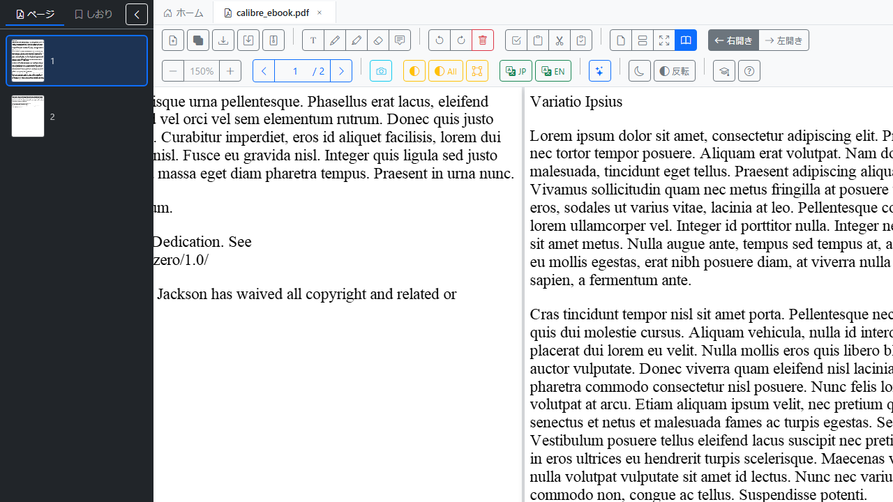
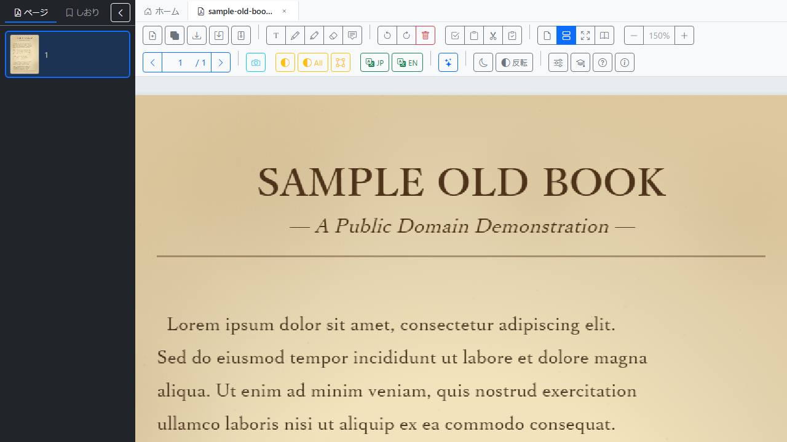
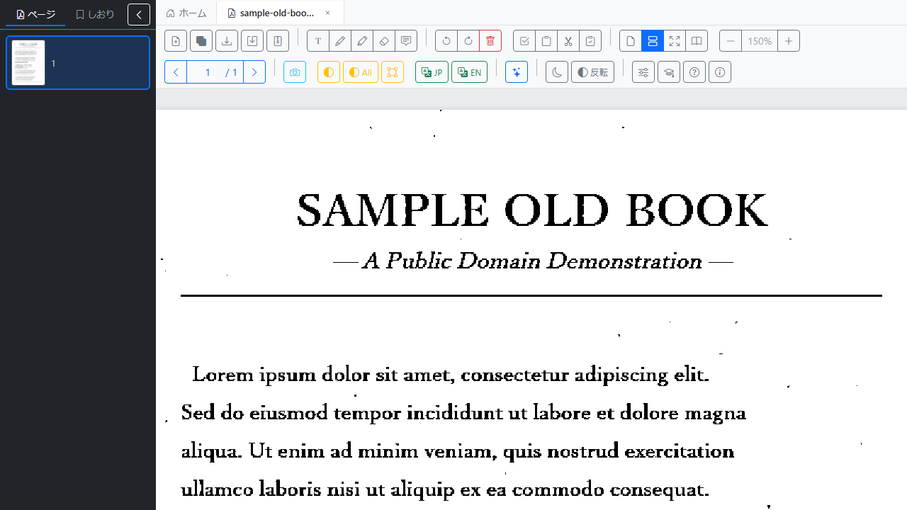

主な機能
二値化・傾き補正
スキャンした書類をワンクリックで白黒に変換、傾きの自動補正も可能。
OCR (日本語・英語)
文字認識結果を PDF にテキストレイヤとして埋め込めます。
ページ操作
回転・削除・並べ替え (D&D)・コピー&ペースト・サムネイル右クリックメニューで素早く整理。
結合・圧縮保存
複数 PDF・画像を 1 ファイルに。解像度 (DPI) と JPEG 品質を指定した圧縮保存でメール添付サイズに調整。
編集ツール
テキストボックス・フリーハンド描画・ハイライト・コメント・消しゴム。注釈は保存時に PDF に焼き込み。
AI 要約 (オプション)
Ollama (ローカル) / OpenAI / Anthropic / Gemini / Mistral から選択可能。
スクリーンショット

メイン画面 (単ページ表示)

見開き表示

二値化前 (古書スキャン例)

二値化後
動作環境
- Windows 11 (64-bit)
- インストーラ約 195MB、必要 RAM 約 4GB 以上を推奨
- インターネット接続は必須ではありません (オンライン AI 要約のみネット必要)
インストール
- 最新版リリースページから
benri-na-pdf Setup x.y.z.exeをダウンロード - ダウンロードしたインストーラを実行
- スタートメニューから「benri-na-pdf」を起動